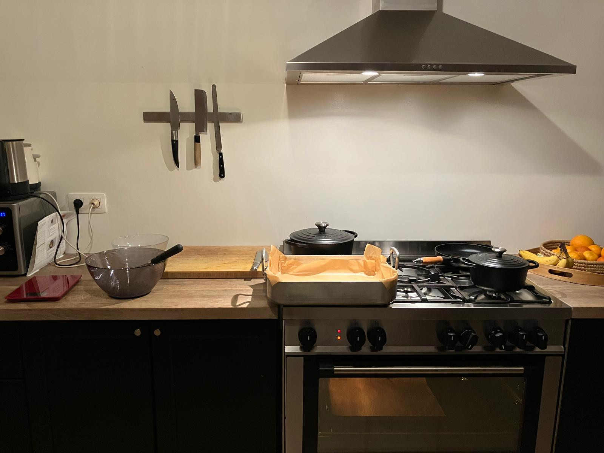
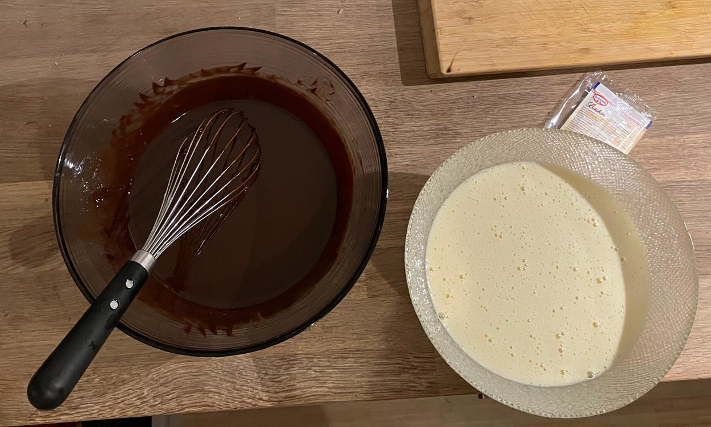
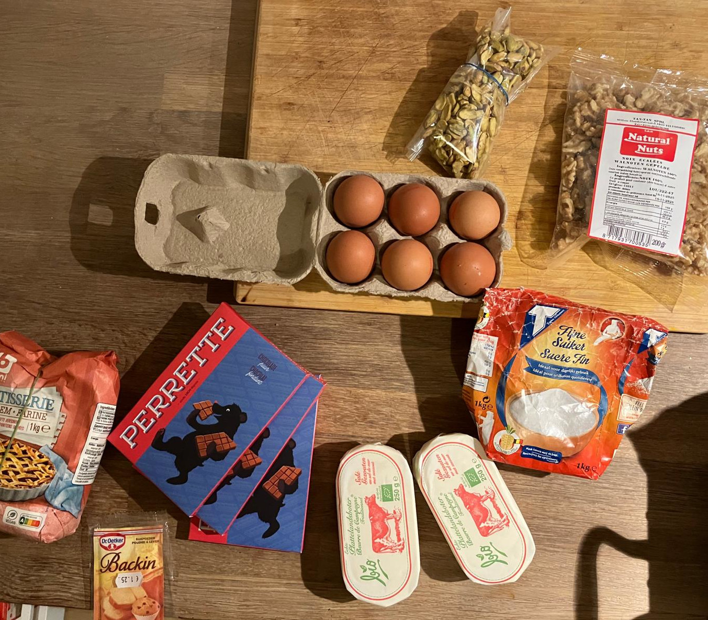
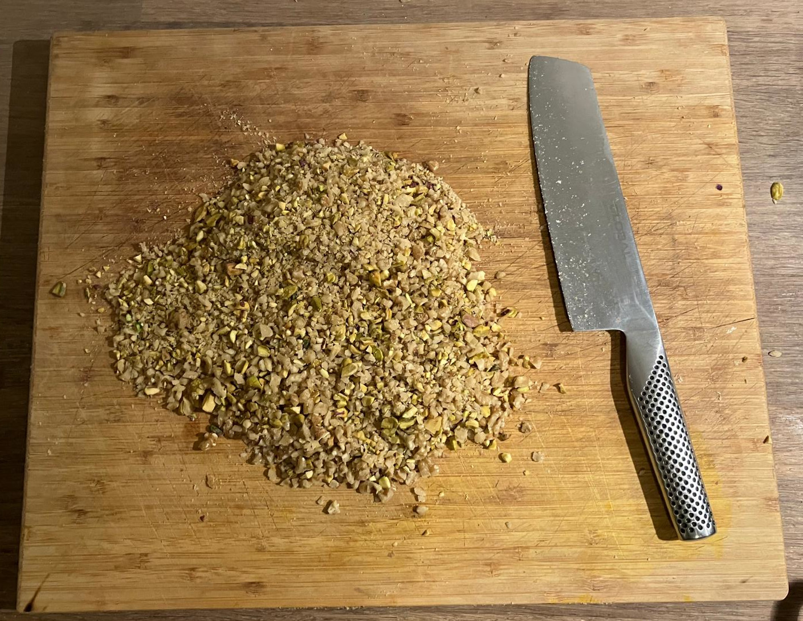
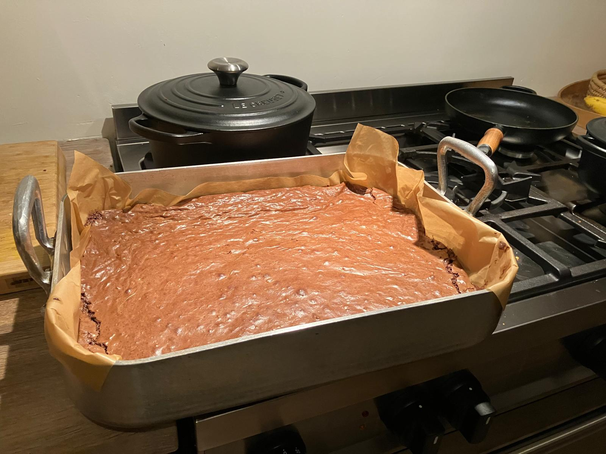

Correlatie RIE-IEPR en brownies

Wat is het RIE-IEPR loket?
Wat is het RIE-IEPR loket?
Wat is het RIE-IEPR loket?
80% van alle data is hetzelfde
- Plan: subplan, stappen en variabelen
- Deployment: platform, systemen
- Uitvoering: activiteiten, entiteiten gebruikt binnen de activiteiten met een resultaat
- Entiteiten: afgeleide entiteiten
Plan
Platform, deployment, systemen

Uitvoering

Uitvoering > Entiteiten
Entiteiten worden gemaakt en gebruikt in activiteiten, uitgevoerd door systemen

Uitvoering > Activiteiten, actuaties en observaties
Actuaties

Observaties

Van abstract plan tot fysische realiteit
└ Step
└ Input Variable
└ Output Variable
└ SubPlan
Variable
└ hosts → System (implements Step)
Deployment
└ deployedSystem → System
└ executedBy → System
└ used → Entity (input)
└ result → Entity (output)
Entity (correspondsTo Variable)
└ wasDerivedFrom → Entity (input)
Voorbeelden
(Normatieve laag)
- Procesdefinities, recepten, nalevingsregels
- Geversioneerde masterdata
- Wijzigt zelden
- Regelgeving
- Analysemethodes, software, modellen
- Plannen vs Procedures / meer- of minder concrete plannen
(Contextlaag)
- Welke installatie, sensor of firmware
- Tijdsgebonden configuraties
- Verbindt het plan met de fysieke werkelijkheid
(Operationele laag)
- Sensormetingen, batches, emissies
- Tijdsreeksen en gebeurtenissen met hoge datavolumes
- Onveranderlijk auditspoor
Traceerbaarheid over drie lagen
Samenwerking Data Team
Doelstellingen datamodel
Hoe kunnen we een datamodel ontwikkelen dat toekomstbestendig is en gebaseerd op bestaande standaarden zonder dat dit voor complexiteit zorgt bij de implementatie
maar ook ...
Hoe onderhouden we deze samenwerking op lange termijn, ook na de uitvoering van het project?
Vooranalyse (November/December 2025)
- "Welke standaarden zijn relevant? (SOSA, P-PLAN, PROV-O, ...)"
- "Wat zijn onze data requirements?"
- "Hoe hangt de data conceptueel hierarchisch samen?"
- "Wat als we een inrichting of activiteit als een
p-plan:Planmodelleren?"
Kickoff data team (Januari 2026)
Uitdagingen
- Verschillende achtergronden en visies
- Verschillende verwachtingen over de ontologie
- Meerdere iteraties nodig om tot een mooi resultaat te geraken
- Veel handmatig werk voor voorbeelddata ...
- Veel handmatig werk bij elke wijziging ...
De oplossing? Automatisatie van het analyse proces!

Ontologie Gedreven Ontwerp
- Het opstellen van een formele ontologie die de concepten, relaties en regels van het domein beschrijft.
- Het gebruik van deze ontologie als basis voor het genereren van datamodellen, databaseschema's, API's en documentatie.
- Het iteratief verfijnen van de ontologie en de transformatie regels op basis van feedback en nieuwe inzichten.
Ontologie Gedreven Ontwerp
Voorbeeld: Exploitatie
:Exploitatie a owl:Class ;
rdfs:label "Exploitatie"@nl ;
rdfs:comment "Een exploitatie is de uitrol van middelen door een exploitant op een exploitatie locatie leidend tot een milieueffect."@nl ;
# Klassenhierarchie afgeleid van OWL subclass relaties (en reasoning)
rdfs:subClassOf ssn:Deployment ;
# Primary key(s) afgeleid van mappings in de URI
hydra:search [ a hydra:IriTemplate ;
hydra:template "https://data.riepr.omgeving.vlaanderen.be/id/exploitatie/{exploitatielocatie}/{localId}"^^hydra:Rfc6570Template ;
hydra:mapping [ hydra:variable "exploitatielocatie" ; hydra:property sosa:isHostedBy ; hydra:required true ] ,
[ hydra:variable "localId" ; hydra:property adms:identifier ; hydra:required true ]
] ;
# Kardinaliteiten afgeleid van OWL restricties
rdfs:subClassOf [ a owl:Restriction ;
owl:onProperty rdfs:label ;
owl:minCardinality "1"^^xsd:nonNegativeInteger
] ;
rdfs:subClassOf [ a owl:Restriction ;
owl:onProperty ssn:deployedSystem ;
owl:someValuesFrom ssn:System ;
owl:minCardinality "0"^^xsd:nonNegativeInteger ;
] .
Ontologie Gedreven Ontwerp
Voorbeeld: Exploitatie ...
- Een exploitatie is een deployment
- Een exploitatie word geïdentificeerd door een combinatie van de locatie en een lokale identifier
- Een exploitatie moet een naam hebben
- Een exploitatie heeft een relatie "deployedSystem" met kardinaliteit 0..* naar systemen
Transformatie regels (ontwikkelaars regels)
Voorbeelden:
adms:identifier→ "aparte key value tabel"- Genegeerde of overschreven properties (max kardinaliteit van een label)
- Welke classen we samenvoegen als enums (bv. Procedure type, Status, ...)
- Versioneringstabellen, identiteitstabellen of composite keys?
- Bijkomende properties (bv. UUID, ingediend, ...)
Regels zijn configuratie en wijzigen het achterliggende datamodel niet
Uitvoer naar SQL met comments ...
CREATE TABLE exploitant ( -- Gegenereerd van: https://data.riepr.omgeving.vlaanderen.be/ns/riepr#Exploitant
uuid VARCHAR,
uri VARCHAR,
geldig_van DATE,
geldig_tot DATE,
aangemaakt_op TIMESTAMP,
aangepast_op TIMESTAMP,
type VARCHAR,
benaming VARCHAR,
ingediend BOOLEAN,
-- ...
PRIMARY KEY (uuid, geldig_van, aangemaakt_op)
);
COMMENT ON TABLE exploitant IS 'https://data.riepr.omgeving.vlaanderen.be/ns/riepr#Exploitant';
COMMENT ON COLUMN exploitant.geldig_van IS 'http://purl.org/dc/terms/issued';
COMMENT ON COLUMN exploitant.type IS 'http://purl.org/dc/terms/type';
COMMENT ON COLUMN exploitant.adres IS 'http://www.w3.org/ns/locn#address';
COMMENT ON COLUMN exploitant.aangepast_op IS 'http://purl.org/dc/terms/modified';
COMMENT ON COLUMN exploitant.geldig_tot IS 'http://purl.org/dc/terms/valid';
-- ...
Uitvoer naar Java met annotations ...
// Gegenereerd van: https://data.riepr.omgeving.vlaanderen.be/ns/riepr#Exploitant
@Entity
@Table(name = "exploitant")
public class Exploitant {
@Id
@Column(name = "uuid")
private String uuid;
@Column(name = "uri")
private String uri;
// http://purl.org/dc/terms/created
@JsonProperty("dct:created")
@Column(name = "aangemaakt_op")
private Date aangemaaktOp;
// ...
}
Uitvoer naar klassendiagrammen ...
Uitvoer naar klassendiagrammen ...
Uitvoer SHACL shapes en validatie
Via automatische SHACL validatie kunnen we snel feedback krijgen over inconsistenties in het datamodel op conceptueel niveau
Oftewel, zijn er regeltjes die elkaar tegen werken...
https://...#Keuken✅https://...#Brownie❌ ("Brownie" is impliciet het "Bakken")
Conclusie datamodellering
Het is makkelijk om een complex datamodel te maken, het is moeilijker om iets complex tot eenvoud te herleiden.
Enkel voordelen
- Bevorderde gegevensuitwisseling en samenwerking
- Verbeterde traceerbaarheid en transparantie
- Toekomstbestendig en flexibel
- Herbruikbaar binnen en buiten teams
Conclusie datamodellering
(1) Planning
Conclusie datamodellering
(2) Deployment
Conclusie datamodellering
(3) Uitvoering
Nu
En, wat hebben we vandaag geleerd?
SOSA, P-PLAN, PROV-O vormen samen een generiek datamodel binnen dOMG
- Bevorderde gegevensuitwisseling en samenwerking
- Verbeterde traceerbaarheid en transparantie
- Toekomstbestendig en flexibel
Iets generiek betekent niet noodzakelijk complex